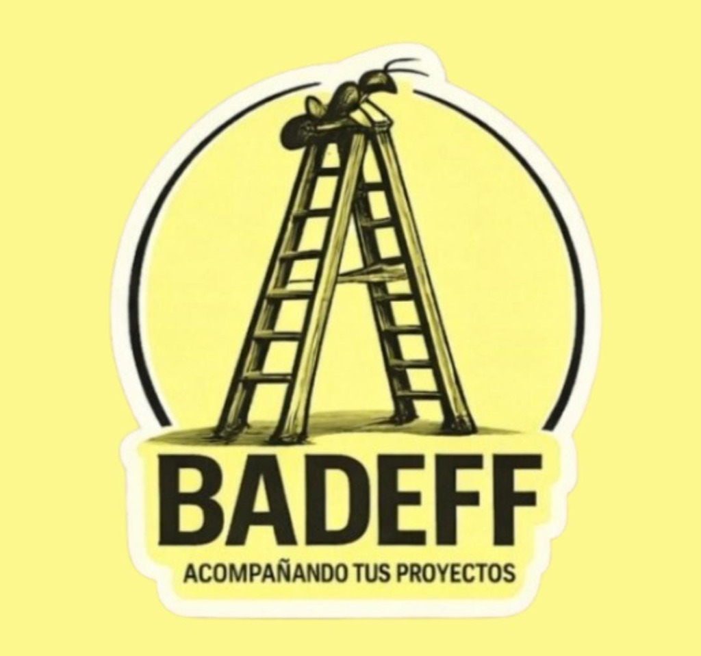
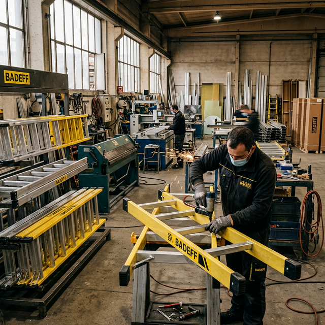
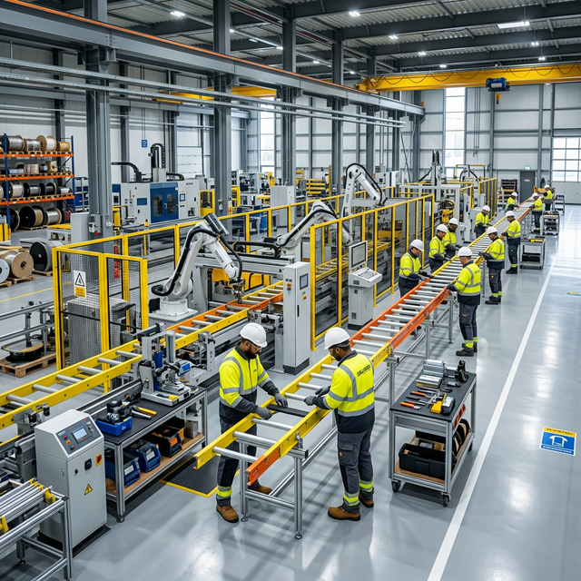
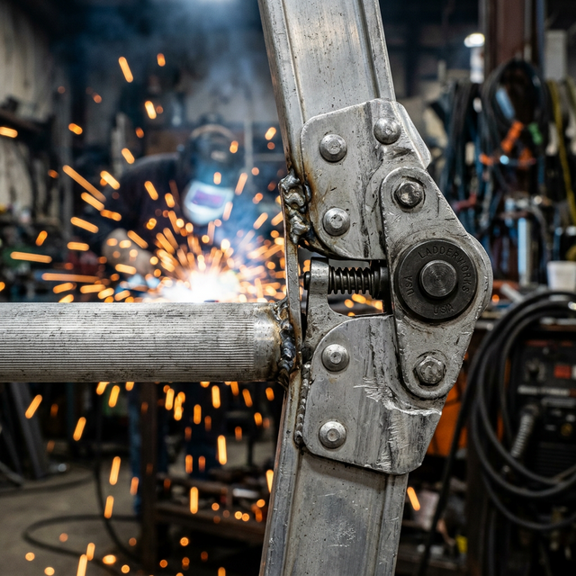

Materiales premium
Trabajamos con aluminio y fibra de vidrio de alta calidad para máximo rendimiento.

En BADEFF fabricamos escaleras de aluminio y fibra de vidrio con foco en seguridad, durabilidad y rendimiento. Acompañamos a profesionales, industrias y hogares con soluciones a medida.


Fabricación nacional con estándares de seguridad y asesoría personalizada.
Trabajamos con aluminio y fibra de vidrio de alta calidad para máximo rendimiento.
Cada modelo está pensado para ofrecer estabilidad y confianza en cada uso.
Te ayudamos a elegir la escalera correcta según altura, carga y tipo de trabajo.
Algunos de nuestros modelos más consultados.



Visitános en nuestro punto de Atención.